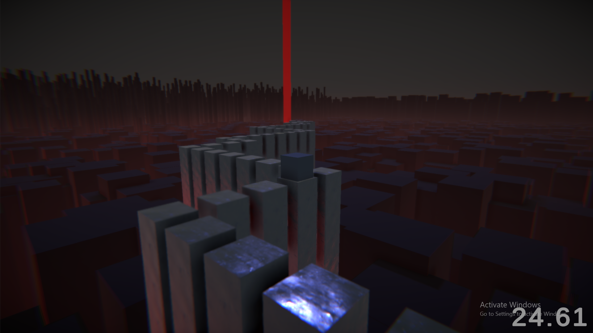
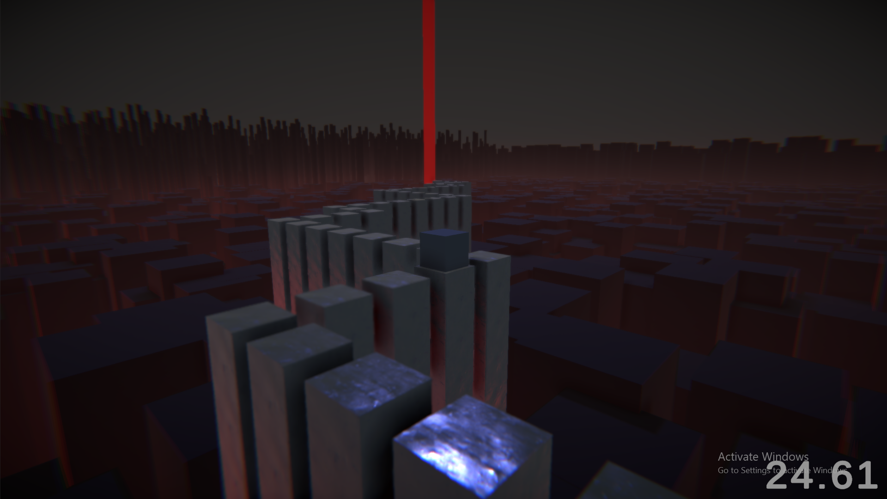
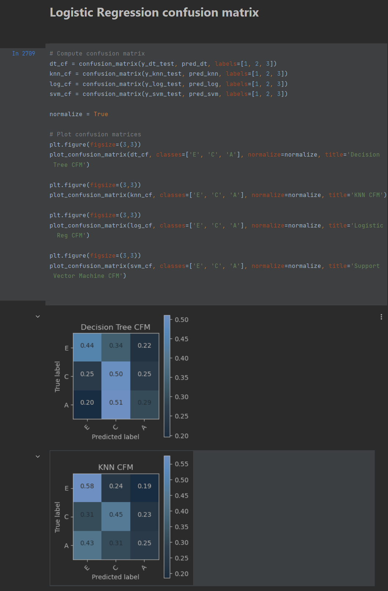

Hi!
I'm Luke,
an aspiring Software Developer.
Education:
• Game Development - Ljud och Bildskolan in Sweden, Varberg, 2019-2021
I studied Game Development for 3 years at LBS, where I learnt C#, 3D modelling, texture creation, and other Game Dev related things.Here are some examples:
 

• Software Engineering - Yoobee Colleges Ltd in New Zealand, Auckland, 2021-Now
C++ has become the language I am the most confident and comfortable in after we studied it during our first year at Yoobee.Because of my experience with Unity (A very buggy Game Dev application), I have learnt robust debugging methods, as well as good problem-solving abilities.
I'm showing the code below to hopefully showcase that I understand pointers & references.
It's a set of functions to save & load lists of objects.
The reason I use template functions is that it allows me to easily add additional support for other object types.


We were also taught UI/UX design, HTML & CSS, which we then used to redesign and then develop a website.
See more here

In our second year we took a datascience class and learnt the basics of how to create AI algorithms to help us produce some predictions on a dataset. We then used this on a dataset that had collected information on drinking patterns in teenagers, and tried to predict what their grades were. While the prediction algorithm was very weak, it taught me what I did wrong. I wanted to use as many parameters as possible, where I should've left a lot of them out.
